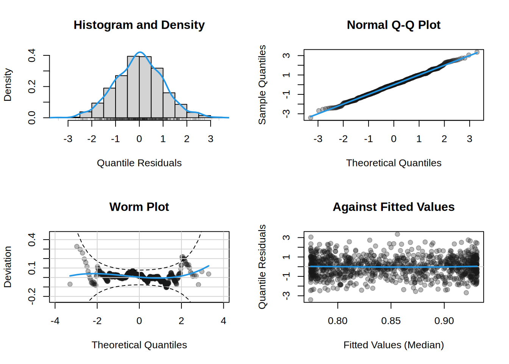

Normal <- function(...) {
fam <- list(
"family" = "Normal",
"names" = c("mu", "sigma"),
"links" = c("mu" = "identity", "sigma" = "log"),
"d" = function(y, par, log = FALSE, ...) {
dnorm(y, par$mu, par$sigma, log = log)
}
)
class(fam) <- "gamlss2.family"
return(fam)
}Family Objects
All family objects of the gamlss.dist package, see Rigby et al. (2019), can be used for modelling in gamlss2. However, for users wanting to specify their own (new) distribution model, this document provides a guide on how to define custom family objects within the gamlss2 framework.
Family objects in the gamlss2 package play an essential role in defining the models used for fitting data to distributions. These objects encapsulate the necessary details about the distribution and the parameters, such as:
- The names of the parameters.
- The link functions that map the parameters to the predictor.
- Functions for the density, log-likelihood, and their derivatives.
This document provides an overview of how to construct and use family objects within gamlss2. By the end, you should have a good understanding of how to implement a custom family for use in statistical models.
1 Defining Family Objects
A family object in gamlss2 is a list that must meet the following minimum criteria:
- Family Name: The object must contain the family name as a character string.
- Parameters: The object must list the parameters of the distribution (e.g.,
"mu"and"sigma"for a normal distribution). - Link Functions: It must specify the link functions associated with each parameter.
- Density Function: A
d()function must be provided to evaluate the (log-)density of the distribution.
Optionally, a family object can include functions to calculate the log-likelihood, random number generation, cumulative distribution function (CDF), and quantile function.
Here’s an example of a minimal family object for the normal distribution.
In this example, we define a normal distribution with two parameters: "mu" (mean) and "sigma" (standard deviation). The link function for "mu" is the identity, and for "sigma", it is the log function. The density function uses the standard dnorm() function from to calculate the normal density.
2 Density Function
The density function must accept the following arguments:
d(y, par, log = FALSE, ...)y: The response variable.par: A named list of parameters (e.g.,"mu","sigma"for the normal distribution).log: A logical value indicating whether to return the log-density.
3 Optional Derivatives
Family objects can optionally include functions to compute the first and second derivatives of the log-likelihood with respect to the predictors (or its expectations). These derivatives are used for optimization during model fitting.
The derivative functions follow the form:
function(y, par, ...)The derivate functions of first order must be provided as a named list, one list element for each parameter of the distribution, and is named "score". The second order derivative list is named "hess". Note that these functions must return the derivative w.r.t. predictor and the "hess" functions must return the negative (expected) second derivatives
An example of setting up first and second order derivatives for the normal is provided in the following code:
Normal <- function(...) {
fam <- list(
"family" = "Normal",
"names" = c("mu", "sigma"),
"links" = c("mu" = "identity", "sigma" = "log"),
"d" = function(y, par, log = FALSE, ...) {
dnorm(y, par$mu, par$sigma, log = log)
},
"score" = list(
"mu" = function(y, par, ...) {
(y - par$mu) / (par$sigma^2)
},
"sigma" = function(y, par, ...) {
-1 + (y - par$mu)^2 / (par$sigma^2)
}
),
"hess" = list(
"mu" = function(y, par, ...) {
1 / (par$sigma^2)
},
"sigma" = function(y, par, ...) {
rep(2, length(y))
}
)
)
class(fam) <- "gamlss2.family"
return(fam)
}If no derivatives are provided, numerical approximations will be used by the package.
4 Additional Functions
Family objects can also include other functions such as:
- Cumulative distribution function (
p()). - Quantile function (
q()). - Random number generation (
r()).
These functions should adhere to the same structure as the density function, taking the response (y), parameters (par), and other relevant arguments.
Note
Note that the CDF p() function is needed it for computing the quantile residuals.
5 Flexible Links
Note that the example above used static link functions to define the family object. However, users can easily create families with flexible link functions as well. A helpful example of how to implement such flexibility can be found in the Kumaraswamy distribution implementation, which provides a clear template for setting up families with customizable link functions.
The Kumaraswamy distribution is a continuous distribution defined on the interval \((0, 1)\). It is similar to the Beta distribution but has simpler forms for its cumulative distribution and inverse cumulative distribution functions, making it more computationally efficient for certain applications. Unfortunately the Kumaraswamy distribution parameters do not conform with the distribution regression principal that parameters should have a clear interpretation in terms of location and scale. For example, the mean and variance of the distribution are a rather complicated functions of the parameters a and b, nevertheless the distribution is a good example of two parameter distribution in which the parameters are not named as mu and sigma as in all distributions defined in Rigby et al. (2019).
The probability density function (PDF) of the Kumaraswamy distribution is:
\[ f(y; a, b) = aby^{a-1}(1 - y^a)^{b-1} \]
where \(y \in (0, 1)\) is the response, and \(a\) and \(b\) are non-negative parameters that determine the shape of the distribution. The complete implementation, including flexible link functions is provided in the Kumaraswamy() family.
In the following example, we will create the family object for the Kumaraswamy distribution using the Kumaraswamy() function and estimate a model using this distribution. In detail, we will:
- Define the Kumaraswamy family object.
- Simulate data based on this distribution.
- Estimate the model and plot the results.
## Define the Kumaraswamy family object with specific link functions.
fam <- Kumaraswamy(a.link = shiftlog, b.link = "log")
## Set seed for reproducibility.
set.seed(123)
## Simulate data for 1000 observations.
n <- 1000
d <- data.frame("x" = runif(n, -pi, pi))
## Specify the true parameters.
par <- data.frame(
"a" = exp(1.2 + sin(d$x)) + 1, # Parameter 'a' depends on 'x'
"b" = 1 # Parameter 'b' is constant
)
## Sample response values using the family object.
d$y <- fam$r(1, par)
## Estimate a model using the Kumaraswamy family.
b <- gamlss2(y ~ s(x), data = d, family = fam)GAMLSS-RS iteration 1: Global Deviance = -1503.9979 eps = 0.674665
GAMLSS-RS iteration 2: Global Deviance = -1504.1074 eps = 0.000072
GAMLSS-RS iteration 3: Global Deviance = -1504.1261 eps = 0.000012
GAMLSS-RS iteration 4: Global Deviance = -1504.1293 eps = 0.000002 ## Plot the estimated effect.
plot(b)## Plot residual diagnostics.
plot(b, which = "resid")
In this example, we simulated a dataset where the parameter a of the Kumaraswamy distribution varies with x following a sinusoidal pattern. We then used the gamlss2() function to fit a smooth model that estimates this relationship. The effect of x on y is plotted, followed by a diagnostic plot to assess residuals.
The Kumaraswamy() family in gamlss2 is flexible, allowing the user to specify different link functions for its parameters, such as the default shiftlog link function for parameter a, which ensures non-negative values.
6 Summary
Family objects in the gamlss2 package are a fundamental component for defining flexible, distribution-based regression models, and beyond. By encapsulating the necessary elements, such as parameters, link functions, and density functions, they provide a powerful framework for customizing models to fit specific data. The flexibility to define custom families, as demonstrated with the Kumaraswamy() distribution, enables users to extend the package beyond its default families, making it adaptable to a wide range of modeling scenarios. Furthermore, the ability to define both static and dynamic link functions enhances the versatility of gamlss2 for distributional regression, empowering users to tailor models to their unique data and research needs.
References
Rigby, R. A., and D. M. Stasinopoulos. 2005. “Generalized Additive Models for Location, Scale and Shape.” Journal of the Royal Statistical Society C 54 (3): 507–54. https://doi.org/10.1111/j.1467-9876.2005.00510.x.
Rigby, R. A., D. M. Stasinopoulos, G. Z. Heller, and F. De Bastiani. 2019. Distributions for Modeling Location, Scale, and Shape: Using GAMLSS in R. Boca Raton: Chapman & Hall/CRC. https://doi.org/10.1201/9780429298547.